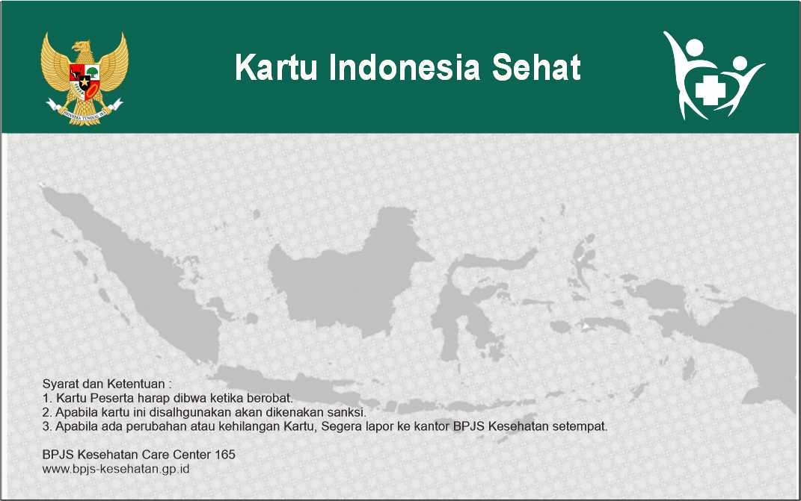

Pembuat Template Kartu BPJS adalah aplikasi online yang memudahkan Anda membuat tampilan kartu BPJS secara cepat dan praktis. Anda dapat mengubah nama peserta, nomor kartu, NIK, foto, barcode, QR Code, serta informasi lainnya sesuai kebutuhan desain.
Website ini cocok digunakan untuk keperluan:
Semua proses dilakukan langsung melalui browser tanpa perlu menginstal aplikasi tambahan. Hasil dapat diunduh dalam format gambar berkualitas tinggi sehingga siap digunakan untuk presentasi maupun kebutuhan desain.
Akses generator ini kapan saja dari perangkat apa pun, baik PC maupun HP. Fitur Lengkap Pembuat Template BPJS dirancang agar sangat intuitif.
Ya, Anda dapat membuat template kartu BPJS secara online dengan mudah.
Bisa. Anda dapat mengunggah foto sendiri.
Ya, hasil dapat diunduh dalam kualitas tinggi.
Tidak. Data hanya digunakan selama proses pembuatan template.
Selain membuat template kartu BPJS, mungkin Anda juga sedang mencari cara mudah untuk mengunduh video dari internet menjadi format audio (MP3) atau video (MP4) secara gratis. Anda tidak perlu menginstal aplikasi tambahan di HP atau PC Anda.
Cukup salin tautan (link) video yang ingin Anda unduh, lalu kunjungi situs pengunduh video terbaik. Prosesnya sangat cepat, aman, dan tanpa biaya langganan apapun.
Kunjungi dan coba sekarang di: ytdmp3.web.id

Preview berubah secara real-time saat mengisi form.
Klik tombol Download untuk menyimpan sebagai JPG siap cetak.